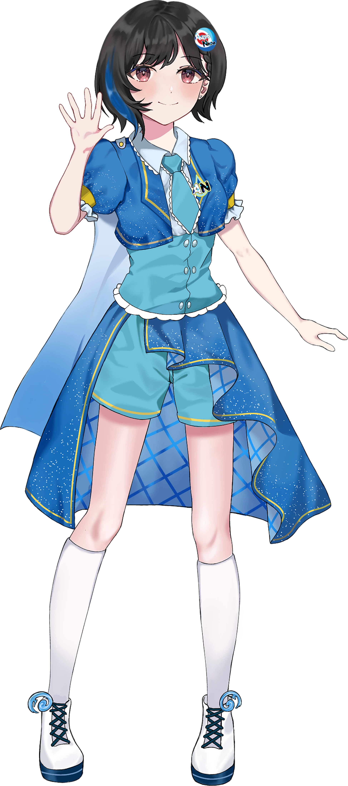
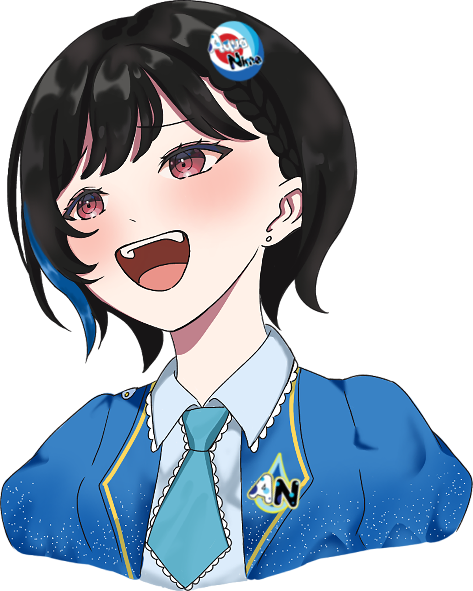

Anime & Manga
Berbagi rekomendasi, cerita, teori, dan obrolan tentang karya yang sedang kamu ikuti.
JAPANESE POP CULTURE COMMUNITY
Tempat bertemu orang dengan minat yang sama, berbagi hal yang disukai, dan mencoba sesuatu bersama—dari anime dan manga sampai karya kreatif dan kegiatan komunitas.
AQUANIME ORDINARY WEEBS · CONNECT / CREATE / GROW

好きなことを、一緒に。A / 01AquaNime berakar dari L-Army Ordinary Weebs yang memulai perjalanan pada 2017. Pada 29 Mei 2022, komunitas ini melakukan rebranding menjadi AquaNime Ordinary Weebs. Nama boleh berkembang, tetapi semangat untuk menemukan teman dan berbagi ketertarikan tetap menjadi bagian dari perjalanan kami.
Kenali perjalanan AquaNime ↗Komunitas tidak harus punya satu cara untuk menikmati hobi. Pilih ruang yang paling dekat dengan minatmu, atau temukan minat baru di tengah perjalanan.
Berbagi rekomendasi, cerita, teori, dan obrolan tentang karya yang sedang kamu ikuti.
Ruang untuk ilustrasi, fanart, tulisan, fotografi, cosplay, dan karya komunitas.
Bertemu langsung, menikmati acara, dan membangun kenangan bersama anggota lain.
J-pop, idol, musik, budaya populer Jepang, dan berbagai hal yang membuat kita penasaran.
Mulai dari mengikuti kabar komunitas, datang ke kegiatan, berbagi karya, sampai membantu menyiapkan program. Kamu tidak harus langsung tahu ingin berkontribusi di mana.
Lihat cara bergabung ↗
Aria adalah maskot resmi AquaNime. Ia hadir sebagai representasi kreativitas, rasa ingin tahu, dan semangat untuk terus berkembang bersama.
Kenali AquaNime dan Aria ↗Ingin tahu kegiatan dan jalur bergabung yang tersedia? Mulai dari kanal resmi AquaNime. Tim komunitas dapat membagikan informasi terbaru dan membantu menjelaskan langkah berikutnya.
Informasi bergabung ↗